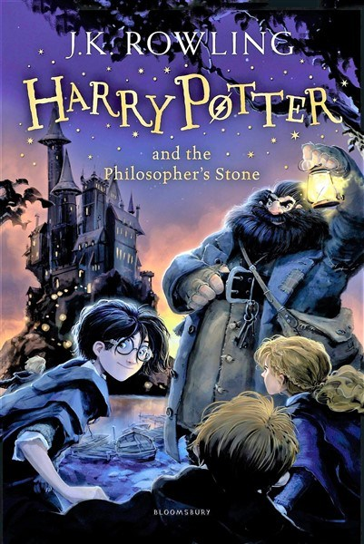

|  | Harry Potter and the Philosopher’s Stone, the first tale in the immensely popular Harry Potter stories (1997; also published as Harry Potter and the Sorcerer’s Stone) by J.K. Rowling. Ten-year-old Harry is an orphan who lives with his uncaring Aunt Petunia, loathsome Uncle Vernon, and (worst of all) his spoiled cousin Dudley. Always in trouble for things that are not apparently his fault, condemned to a life of drudgery and forced to sleep in a cupboard under the stairs, Harry is astonished to receive a letter from the Hogwarts School of Witchcraft and Wizardry. Before he can open the letter, Uncle Vernon takes it, but the house is soon plagued by letters and surrounded by owls. On Harry’s 11th birthday, a giant called Rubeus Hagrid appears with another copy of the letter. Harry rapidly discovers that it is an offer of a place at Hogwarts, that he is a wizard himself, and that he acquired the lightning-bolt scar on his forehead in the fight when his parents were killed by the evil wizard Voldemort. Hagrid deals with Uncle Vernon and with Dudley, and soon Harry finds himself in the magical world of Hogwarts under the care of headmaster Albus Dumbledore. Harry’s eventful first year at the school—with its successes and failures, friendships and enmities, broom-stick-riding Quidditch matches, and potions lessons—is overshadowed by dark thoughts of his parents’ murder and the dawning knowledge that one day he may have to meet Voldemort, too. Harry’s curiosity is destined to lead him and his friends into trouble, even danger, before they discover the truth about the mysterious Philosopher’s Stone. |
This is the little book that could. J.K. Rowling dreamt it up on a train ride to London and spent years working on it (source). She sent the book to many publishers until one (yay Bloomsbury!) finally agreed to publish her work in the United Kingdom in 1997 (under the original title, Harry Potter and the Philosopher's Stone) (source). Harry Potter and the Sorcerer's Stone was published in the United States in 1998. The book became a smash success, winning the UK National Book Award (1997) and the Gold Medal Smarties Prize (1997), and being named a Best Book of the Year (1998) by both Publishers Weekly and the New York Public Library. Yowsa. It also made it onto the New York Times Bestseller list.